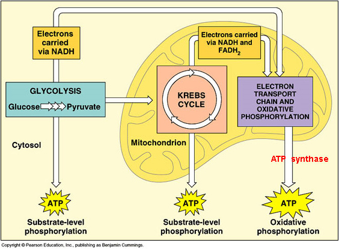
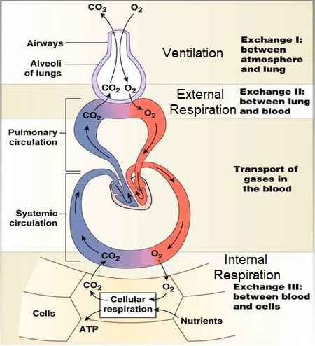

- Functions of the Respiratory System
- What is the purpose of this entire process?
- Ventilation (breathing)
- To move air into and out of respiratory system.
- Gas exchange
- External respiration – gas exchange between air and capillaries in the lungs
- Internal respiration – gas exchange between systemic capillaries and tissues of the body
- Pressure gradients generate diffusion
- O2 utilization and CO2 production
